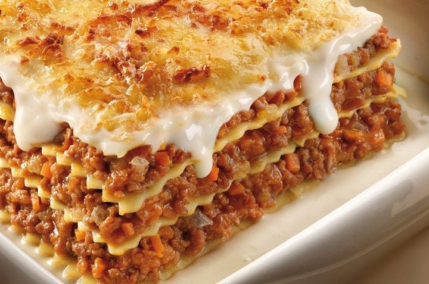

María Soledad Petrino
Henry
Tarea de HTML / CSS
La lasagna es un tipo de pasta. Se suele servir en láminas superpuestas intercaladas con capas de ingredientes al gusto, más frecuentemente carne en salsa boloñesa y bechamel. Su origen es italiano.
Alla Nonna Pietruccia
En nuestro restaurant encontrarás 2 tipos de lasagna:
- Lasagna vegetariana

- Lasagna tradicional
